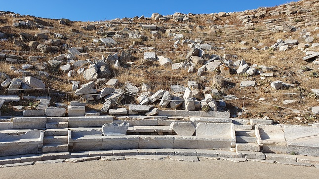
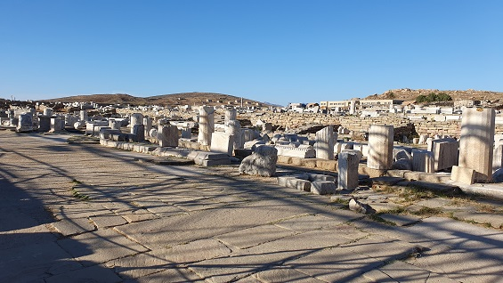
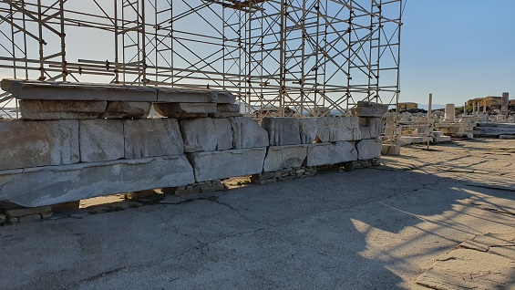
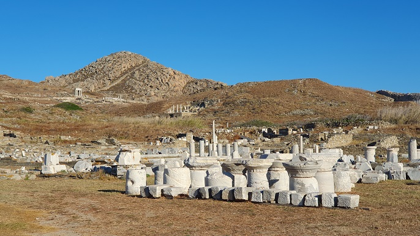
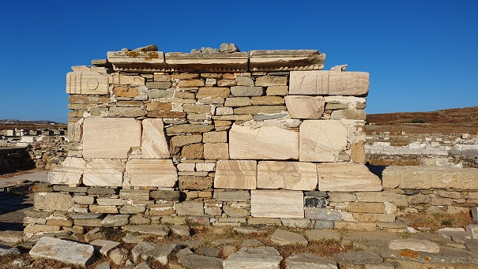
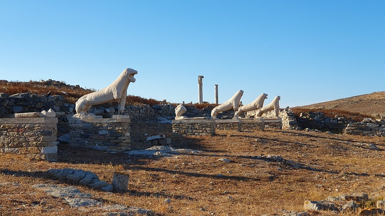
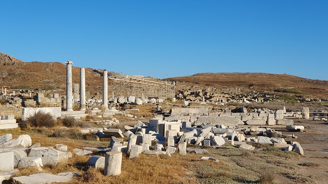
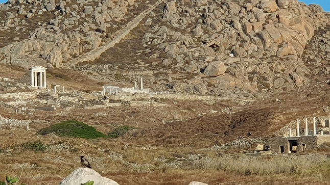
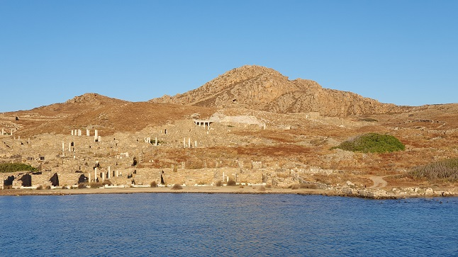

MYKONOS
La isla de
DELOS
|
Visitamos la isla en junio de 2024. Nuestra visita a Delos: Delos, la isla sagrada. Uno de los
yacimientos más importantes de Grecia. El mayor centro religioso y
político de los jonios. Los primeros habitantes de Delos
datan del 2.500 a.e.c. con sencillas viviendas en la cima de la colina
baja de Kynthos. Los Micénicos llegaron a finales del siglo XV a.e.c y
se establecieron en el pequeño valle junto al mar. En el siglo V a.e.c.
llegaron los Griegos y en el 166 a.e.c pasó a manos de Roma. Ver: Plano del Yacimiento
Desembarcamos en el Puerto
comercial y nos dirigimos hacia el Ágora de los Competaliastas es uno de
los principales mercados de Delos. Data de finales del siglo II a.e.c.
El mercado debe su nombre a los Competaliastas, una asociación de
esclavos y hombres libres que tenían los Lares, como sus patrones.
Continuamos nuestro recorrido por sus calles, que conservan el enlosado original y por sus casas.
La Casa de Dionisos data del 125 a.e.c. Destaca desde lejos por las enormes columnas de mármol de estilo dórico y su esplendido mosaico de Dionisio montando en un tigre. A través de su peristilo se abren las habitaciones de la planta baja. En el centro del patio hay un aljibe para la recogida de agua. Una escalera de piedra conduce a las habitaciones privadas del piso superior. Se cree tenia 3 alturas. Aún son visibles los enlucidos decorativos de las paredes de algunas estancias.
Continuamos por la Casa del Tridente. Accedemos a través de la puerta principal a un gran patio central con un peristilo rodio de columnas dóricas e impluvium. La Casa del Tridente fue probablemente el hogar de un rico comerciante o capitán sirio, porque los elementos decorativos de las columnas (los "prótomos"), leones a la izquierda y toros a la derecha, eran símbolos de los dioses sirios Hadad y Atargatis.
Continuamos con nuestro recorrido con Jorge, nuestro guía. El Teatro fue construido en el
siglo III a.e.c.
Destacan los asientos de la primera fila de mármol, los únicos asientos
con respaldo que todavía existen.
 Posteriormente nos dirigimos a la Vía sacra, el Pórtico de Filipo V y la Stoa Sur.
 Junto con la Stoa Sur, este
pórtico de 72m de largo formaba la ruta procesional hacia el Santuario
de Apolo.


La Casa de los Naxios, es el monumento más antiguo de Delos: el óikos o casa de los
Naxios, un edificio sagrado rectangular
con ocho columnas en el centro, flanqueado por la base del gigantesco
Coloso de los naxios, un kuros de más de 9 m de alto y datado, como el
oíkos visible en la actualidad, a finales del siglo VII a.e.c.
Agora Delians. Próxima al Templo de
Apolo. Esta plaza o mercado tiene forma de L. Estuvo llena de tiendas.
Templo de Poros es templo más antiguo de Apolo.
 El Ágora de los Italianos es el
mayor edificio de Delos, se encuentra al sur.
Avenida de los Leones. Conjunto escultórico de mármol dedicado a Apolo siglo VII a.e.c. De los 9 leones quedan sólo 5 enteros y 3 parciales. Esculpidos en mármol de Naxos. Los leones miraban al lago sagrado. Un león fue llevado como botín a Venecia. Los originales están en el museo.

De vuelta al barco, fuimos disfrutado del yacimiento.....



Volveremos!!!
|
{kind=link}